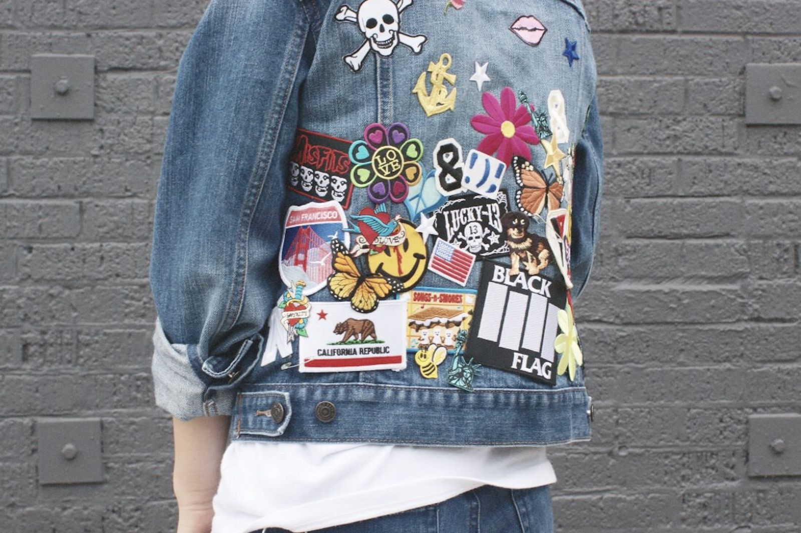

Embroidery Designs on Denim Jackets
By: Victoria
Introduction
Embroidery Designs on Denim Jackets: Adding Artistic Touch to Your Wardrobe
Denim jackets have always been a popular fashion staple, but have you ever considered embellishing them with embroidery designs? Not only does it add a unique touch to your wardrobe, but it also showcases your creativity and individuality. With a little inspiration and some basic embroidery skills, you can easily transform your plain denim jacket into a work of wearable art.
The trend of embroidery on denim jackets has been gaining popularity in recent years, with fashion enthusiasts and celebrities alike sporting this unique style. Embroidery designs can range from floral motifs, animal patterns, or even intricate mandalas. The options are endless, and you can select a design to match your personal style.
Embroidery on denim jackets not only adds a personal touch to your wardrobe but also contributes to a more sustainable and eco-friendly fashion industry. By upcycling old denim jackets and giving them a new life with embroidery designs, you’re creating a style that is both fashionable and environmentally conscious.
To get started, all you need is a denim jacket, embroidery thread, and a needle. There are countless resources available online for free embroidery designs to inspire your creativity. You can also personalize your jacket with your initials, a favorite quote, or even your favorite band's logo.
In conclusion, embroidering designs on denim jackets is a fun and creative way to add a unique touch to your wardrobe. Plus, it's eco-friendly and sustainable. So why not give it a try and create a one-of-a-kind piece that you will love wearing for years to come?
Selecting the Right Denim Jacket
When it comes to adding embroidery designs to denim jackets, selecting the right jacket is crucial. You want a jacket that can withstand the embroidery process and showcase your designs in the best possible way. But with so many options out there, how do you pick the perfect one?
First, consider the type of denim. Look for a sturdy, durable denim that can handle the embroidery process without fraying or tearing. A heavier weight denim will also hold its shape better over time. Additionally, denim with minimal distressing or embellishments will provide a blank canvas for your embroidery designs to shine.
Next, think about the fit. A well-fitting denim jacket will not only look great, but it will also make the embroidery process smoother. Too tight of a jacket may cause puckering, while a jacket that is too loose will make it difficult to position your designs correctly.
Consider the color of the denim as well. While classic blue denim is a timeless option, black and white denim can also provide a sleek background for embroidered designs. If you're feeling bold, try experimenting with colored denim to add a pop of personality to your jacket.
Finally, take into account the style of the jacket. A classic button-up jacket is versatile and timeless, while a cropped or oversized jacket can add a trendy twist. Choose a style that complements your personal style and the designs you plan to embroider.
With these tips in mind, you'll be able to select the perfect denim jacket to showcase your embroidery designs. Don't be afraid to get creative and experiment with different options to make your jacket truly one-of-a-kind.
Gathering the Necessary Supplies
Embroidery has recently become one of the trendiest ways people can personalize their clothing and accessories. Denim jackets, in particular, are an excellent base for embroidery designs because they are durable and versatile. However, before diving into that exciting world, you will need to gather the necessary supplies to get started.
To start, you must decide on the embroidery design you want to create. Once you have the design in mind, select the right tools and materials that will make your embroidery work flawless. Essential materials include embroidery floss, embroidery needles, and a hoop. A hoop will help you to stabilize the denim fabric and prevent the fabric from moving around while you are embroidering.
The embroidery floss comes in different colors, and you should choose the best color that will contrast or complement the denim jacket. If you prefer a straightforward approach, you can start with basic colors like black or white. However, if you want your embroidery work to stand out, consider mixing up different colors to create a unique look.
Another critical material you need is the embroidery needle. The size of the needle can determine how your embroidery will look in the end. Generally, a size six embroidery needle is ideal for denim materials because it is sturdier and less likely to break.
To summarize, embroidery is an exciting way to customize your denim jackets. Getting started does not require much experience or money; all you need is a few crafting supplies and embroidery floss in the colors of your choice. With the right materials and a little creativity, you can create stunning embroidery designs that will elevate your denim jacket game.
Creating the Embroidery Design
Embroidery has come a long way from being a traditional way of decorating fabrics to being a versatile and trendy way of personalizing clothing. One of the most popular ways to decorate clothing is by adding embroidery designs on denim jackets, and this subheading is all about the creative process behind creating the perfect embroidery design for your denim jacket.
Embroidery designs on denim jackets are not just limited to the traditional floral patterns or monograms. Today, there are many ways to create stunning and unique embroidery designs that can be made using modern tools and techniques. The key to creating a successful embroidery design is to have a clear idea of what you want to achieve, and the skills to make it come to life.
One of the first steps in creating an embroidery design is choosing the right design. You can create your own design, use an existing design, or modify an existing design to fit your needs. There are many online resources and tools that can help you create and customize your embroidery design, such as digitizing software and embroidery machines.
Once you have your design, it's time to choose the right colors and threads. Denim jackets are a versatile canvas that can accommodate a wide range of color schemes and thread textures. You can use contrasting colors to make your embroidery design stand out, or blend the colors to create a more subtle effect.
The next step is to choose the right stitches and embroidery techniques. Different stitches and embroidery techniques can create different effects and textures in your embroidery design. Popular embroidery techniques for denim jackets include satin stitch, running stitch, and chain stitch.
In conclusion, creating an embroidery design for your denim jacket is a fun and creative process that requires some research, planning, and skill. By following these tips and techniques, you can create the perfect embroidery design that reflects your style and personality. So, get your embroidery tools ready and start creating the embroidery design of your dreams!
Starting the Embroidery
At the center of most iconic denim jackets lies a powerful statement of personal style - the embroidery design! These creative add-ons can range from simple lettering or flowers to detailed, intricate designs that require skilled hands to produce. However, how does one start the embroidery project?
Before diving headfirst into the embroidery process, it is important to have a clear idea of what design you want to feature on your denim jacket. Take your time, think about what sort of look you are aiming for - is it something modern or retro? What colors would reflect the vibe you are hoping to achieve? Once you've decided on a look, consider whether you'd like to create the design yourself or enlist the help of a skilled embroiderer.
Next, take care in gathering the necessary tools for embroidery, such as embroidery floss, an embroidery hoop, and needles. Depending on your level of embroidery experience, you may opt to purchase a pre-patterned denim jacket or transfer the design onto your jacket yourself.
When applying the design onto the denim, it is important to keep in mind the nature of the fabric. Denim is a very thick and sturdy material, which can make it a challenge to embroider on. Trying different types of knots and stitches can help you create a unique look on your jacket while also ensuring that the embroidery remains firmly in place.
Finally, it is important to be patient while undertaking an embroidery project. Taking breaks in between to stretch, rest your eyes, or simply admire your progress can help you stay motivated and achieve a successful, high-quality embroidery. Follow these steps in starting an embroidery project and let your personal style soar through your new denim jacket!
Adding Details to the Design
Denim jackets have always been a fashion staple, whether you're aiming for a classic or edgy look. They're versatile, comfortable, and a perfect canvas for embroidery designs. Adding details to your embroidery design can elevate your denim jacket's style and make it truly unique to you.
There are numerous ways to add details to embroidery designs on denim jackets. You could experiment with different types of embroidering techniques, such as using a thicker thread to make certain parts of the design pop. You could also play around with the texture of the thread or use metallic thread to add a touch of glamour.
Another way to add details to your embroidery design is by embellishing it with beads, sequins or even small appliques. These additions can highlight certain parts of the design, and provide an extra sparkle to your jacket.
It’s also important to consider the placement of your embroidery design on the denim jacket. Adding details to the back of the jacket can make a bold statement, while adding details to the collar or cuffs can offer a subtle yet sophisticated touch.
Lastly, the color of the embroidery thread can also add interesting details to the design. Bright, bold colors can make a statement, while subtle, muted colors can offer a more refined look.
As you explore different ways to add details to your embroidery designs on denim jackets, keep in mind that the possibilities are endless. You can create a one-of-a-kind masterpiece that perfectly represents your personal style.
Finishing the Embroidery
Once you've selected your embroidery design and carefully marked it out on your denim jacket, it's time to start stitching. But just like any other artistic endeavor, the true artistry lies in the finishing touches. In this section, we'll explore some of the best ways to finish off your embroidery design for a beautiful and polished look.
One of the most important steps in finishing your embroidery is securing your thread. After all, you don't want those beautiful stitches to come undone! To do this, tie a knot at the back of your embroidery design and then weave your thread through a few stitches on the back. Trim the excess thread carefully, making sure not to cut any of your beautiful embroidery.
Another key step is to give your embroidery design a thorough pressing or ironing. This not only smooths out any wrinkles, but also helps to set the stitches and make them stand out against the denim fabric. Be sure to use a pressing cloth to protect your embroidery from any direct heat, and turn your denim jacket inside out to iron on the back side.
Finally, consider adding some extra embellishments to really make your embroidery design pop. A few well-placed beads, sequins, or even more embroidery can add dimension and texture to your piece. Just be careful not to go overboard and detract from the original design.
By following these tips and taking a little extra care with your finishing touches, your embroidery design on your denim jacket can truly become a work of art. So go forth and stitch, and don't forget to take a moment to admire your beautiful creation when it's complete.
Caring for the Embroidered Denim Jacket
Denim jackets with intricate embroidery designs have grown in popularity among fashion-conscious millennials and gen Z. The unique designs, beautiful colors and crafty details make each denim jacket stand out as a work of art. However, fragility and delicacy come with embroidered garments, especially denim, which may need special care to maintain the embroidery's beauty, shape and color vibrancy.
Embroidered denim jackets are perfect for adding a pop of color and personality to your wardrobe, but if you don't take proper care of them, they may become faded and frayed. So, what are some tips for keeping your embroidered denim jacket in top condition?
One of the essential things to do when caring for your embroidered denim jacket is to wash it inside out in cold water to preserve the colors and to prevent the embroidery from rubbing against the washer's agitator or other clothing. While washing, it is best to use mild laundry detergent without any bleach as bleach can ruin the embroidery.
Drying embroidered denim jackets should be done by laying them flat on a clean, dry towel to air dry. It is not advisable to hang them, as this can cause the fabric's weight to stretch and distort the embroidery out of shape.
Another care tip to consider for embroidered denim jackets is to avoid ironing them directly. Ironing should only be done when necessary and should be done on low heat with a cloth barrier between the iron and the jacket’s embroidery. If your embroidered denim jacket gets wrinkled, you can also try steaming it with a handheld steamer to smooth out any creases.
By following these simple tips, you can keep your embroidered denim jacket looking its best for years to come. So go ahead, rock that embroidered denim jacket with pride, and show off your unique flair through your fashion choices!
Conclusion
Embroidery Designs on Denim Jackets: A Timeless Fashion Statement
Denim jackets have always been a staple in any wardrobe, and there's no doubt that embroidery designs have become increasingly popular in recent years. Embroidery is a technique that involves decorating a fabric using needle and thread, and it has become a go-to for adding flair to clothing items, denim jackets included.
Embroidery designs on denim jackets are a unique way to make a statement with your fashion choices. Embroidered denim jackets allow you to express your personality through detailed and intricate designs that showcase your interests and hobbies. From floral designs to geometric patterns to personalized monograms, the possibilities for designs are endless.
Furthermore, embroidered designs can add a touch of nostalgia to your outfit. As we continuously move towards more innovative and modern fashion, embroidery designs are a reminder of the age-old practice of sewing that has been passed down from generations.
In conclusion, embroidery designs on denim jackets are a timeless fashion statement that has stood the test of time. From the retro 70s style to the modern bohemian look, embroidered denim jackets have always remained relevant in fashion. It is not only a way to show your creative side, but it is also a way to elevate your everyday fashion with a touch of uniqueness. So, what are you waiting for? Get your hands on a denim jacket and start exploring the world of embroidery designs!